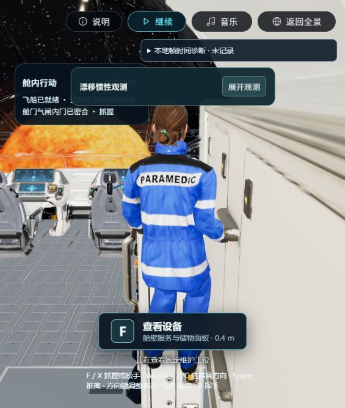
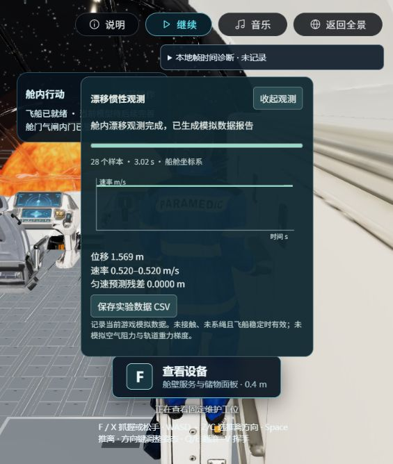
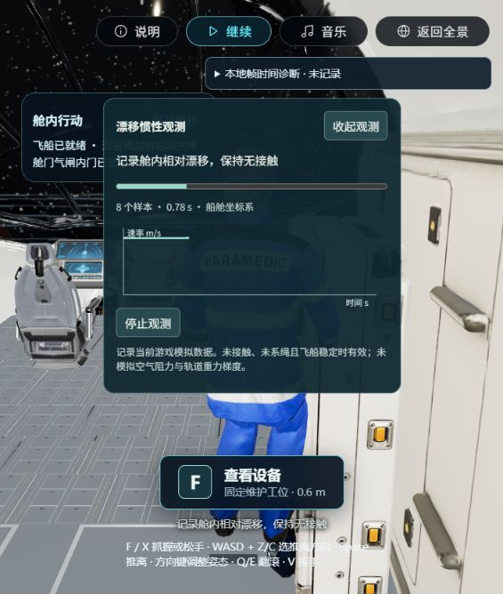

P3-R01 · 2026-10-28 · 原资产 · 桌面 Web 生产构建
漂移观测可以完成，也能回到工位
Space 推离原来跳过已有的收臂过渡，左前臂随即碰到右舷内衬。现将推离接到同一收臂流程；原模型、人物比例、手部触达和源面碰撞保持。本轮已在实际生产游戏连续走完登记、观测及扶手往返；整体视觉和完整EVA仍待验收。
正常速度完整原片
初始扶手 → 工位重抓 → 登记/取消/重新登记 → 推离 → 暂停/恢复 → 完成观测 → 左舷重抓 → 推回右舷 → 再次查看工位
等待本机播放核验。
视频只录实际 WebGL 画布，无音轨和HTML操作面板。按钮/数据报告由下方原始截图补充。同一条链中没有复位、设置人物坐标或切换设备起点。通过只读诊断查看位置辅助选择时机，仍须原生掌面接触；不将此记为未经指导的可用性验收。
本机已完整播放原片：28.154秒，707×835像素，5,513,756字节，播放至结束、无错误。下方动态状态反映当前播放器，不替代此核验记录。
完成观测并返回抓稳

返回后收起数据面板观察原人物和抓握。模型、比例与权重保持，未为截图缩放或移动人物。
28个实际时间戳样本，3.0164秒，位移1.568528米，速率0.520米/秒；最终原抓点为micro-starboard-liner:rail:1。截图是在返回后取得，不是测量终点姿态。
同一原片包含登记取消重试和实验中的暂停恢复。源模型回归另检验暂停、保存和重建后的冻结与继续；本轮首次DOM数值属性读取为空，未把空值相等当作精确冻结测量。
诊断证据与未通过记录
| 阶段 | 证据与结论 |
|---|
| 修复前 | 原路线采样：推离约0.03秒，左前臂原顶点2989命中右舷原内衬22473面。 |
| 最小修复 | 同路线复验：推离后启动原有收臂，3秒数据有效，观测期没有碰撞。 |
| 连续往返 | 主游戏状态：右舷rail:1 → 左舷rail:3 → 右舷rail:1，均实际抓握。 |
| 保护原件 | 六份模型哈希保持；无新增几何、外部资产或物理门限放宽。 |
保留早期导航和录像失败
首次开发页有效观测后错过返回抓点，未计整段通过；另一次生产接近时过早按X，随后滑到服舱区域，亦未通过。首段录屏因60秒上限不能代替最终完整原片。两份149,989字节文件是读取大data链接时截断的无效副本，不作为视频证据；后续按块完整读取原链接，另存文件保留原编码。
接近失败实景 · 失败原片 · 首条60秒片段 · 错过返回抓点状态
工程结果及边界
最终336项测试通过、0失败，类型检查与4.63秒生产构建通过；保留既有大chunk提示。新增实际来源回归从默认初始点完成近壁推离、取消重登、暂停重建、三秒观测、两侧重抓及返回工位。没有修改源几何/权重、放宽触达或碰撞，也没有安装、上传、提交或部署。
完整EVA仍在此前门框穿行停止点；用户视觉、所有设备的无指导连续可用性、冷加载与目标设备长时性能未验收。新装置只提供二维制作输入，尚无模型或流体解算，不把本轮漂移观测称为NASA官方实验。
本轮完整记录 · 最终HUD状态 · 单一任务文档继续记录规格、实现和验收。